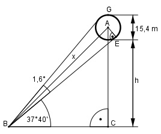

Aufgabe 100 Ein Ballon mit einem Durchmesser von 15,4 m erscheint unter einem Sehwinkel von 1,6°. Sein unterer Rand unter einem Höhenwinkel von 37°40'. In welcher Höhe h befindet er sich?

Im Dreieck BEA: r sin 1,6/2° = --- = |*x x 15,4 m x* sin 0,8° = --------- |:sin 0,8° 2 7,7 m 7,7 m x = ----------- = --------- = 550 m sin 0,8° 0,014 Im Dreieck BCA : 40 40’ = ----° = 0,6667° 60 h + 7,7 m sin (0,8° + 37,6667°) = ------------ |*550 m 550 m 550 m * sin 38,4667°= h + 7,7 m |-7,7 m h = 550 * sin 38,4667° - 7,7 m h = 550 m * 0,6221 – 7,7 m = 334,4 m